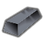
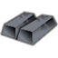
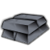
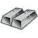
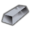

stuffProps 里含 Metallic/StrongMetallic/RuggedMetallic/… —— 能在工作台/建筑里当材质选用;组内按"能顶替到哪档金属"排
太空Vile本地补丁×1代钢级·太空·艾尔梅特超高强度钢AerMet
代钢级可塑成品 944 件:家具建筑651 · 防具142 · 穿戴件40 · 近战工具96 · 远程武器7 · 其它8
金属全谱469 + 常规硬性件328 + 重机电(舱体/发电机/扫描仪)143 + 耐腐蚀设备4
顶替 整档替到 代钢级·中世纪·青铜(940 件基准,含其下全部金属);比钢 +4/−1 件 —— 做不了 无菌瓦屋顶;钢做不了它能做 化学工作站、水冷装置…

生效·ACore_SK
生效·BCore_SK
生效·CCore_SKThings/Item/Ingot StackCount (120,125,135)(221,232,190)被1条配方消耗
护甲 1.65/1.55/0.12 利钝 1.33/1.40 价值 35 质量 0.35 Bulk 0.35
stuff CorrosionResistant, Metallic, RuggedMetallic, StrongMetallic
HSK USLDBar, MAGBar
产自 Make AerMet martenistic stainless steel x25(电弧熔炉/Metal processing V)
源 Vile's Materials Science
Alloys_HighTech.xml
太空Vile本地补丁×1代钢级·太空·特纳卢姆Tennalum
代钢级可塑成品 944 件:家具建筑651 · 防具142 · 穿戴件40 · 近战工具96 · 远程武器7 · 其它8
金属全谱469 + 常规硬性件328 + 重机电(舱体/发电机/扫描仪)143 + 耐腐蚀设备4
顶替 整档替到 代钢级·中世纪·青铜(940 件基准,含其下全部金属);比钢 +4/−1 件 —— 做不了 无菌瓦屋顶;钢做不了它能做 化学工作站、水冷装置…
 生效·ACore_SK
生效·ACore_SK
生效·BCore_SK生效·CCore_SKThings/Item/Ingot StackCount (200,205,205)(155,231,255)
护甲 1.40/1.20/0.07 利钝 1.15/1.25 价值 30 质量 0.20 Bulk 0.35
stuff CorrosionResistant, LightMaterial, Metallic, RuggedMetallic, StrongMetallic
HSK SLDBar, LightBar
产自 Make Tennalum alloy x30(电弧熔炉/Metal processing V)
源 Vile's Materials Science
Alloys_HighTech.xml
太空Vile本地补丁×1代钢级·太空·麦克斯梅特超耐磨钢MaxametSteel
代钢级可塑成品 940 件:家具建筑647 · 防具142 · 穿戴件40 · 近战工具96 · 远程武器7 · 其它8
金属全谱469 + 常规硬性件328 + 重机电(舱体/发电机/扫描仪)143
顶替 整档替到 代钢级·中世纪·青铜(940 件基准,含其下全部金属);比钢 +0/−1 件 —— 做不了 无菌瓦屋顶

生效·ACore_SK生效·BCore_SK生效·CCore_SKThings/Item/Ingot StackCount (185,190,200)(233,211,255)
护甲 1.54/1.40/0.12 利钝 1.55/1.35 价值 32 质量 0.35 Bulk 0.35
stuff Metallic, RuggedMetallic, StrongMetallic
HSK USLDBar, MAGBar
产自 Make Maxamet high-speed steel x25(电弧熔炉/Metal processing V)
源 Vile's Materials Science
Alloys_HighTech.xml